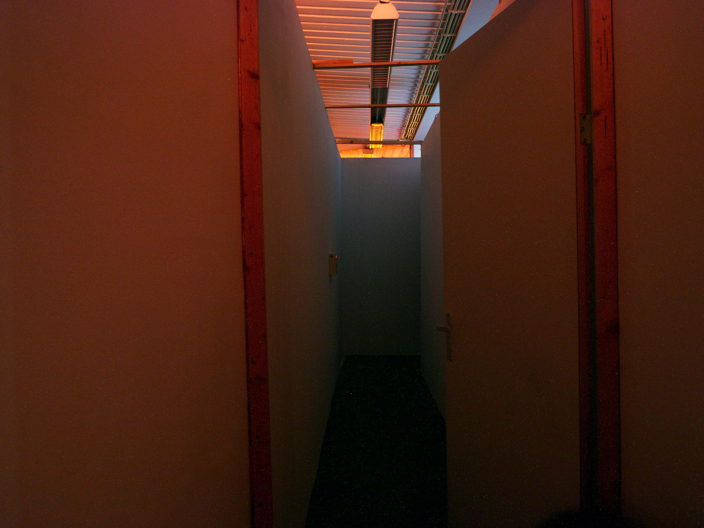

Film, sound, subtitle & narrative installation.
11’44”
‘Not in the sense you mean.’ is a project exploring the uncanny through film, written and spoken word. It uses film as an almost perfectly still image, which together with the silence that surrounds it creates an unsettling experience. Which is only amplified by the long low lit entrance that precedes it.
